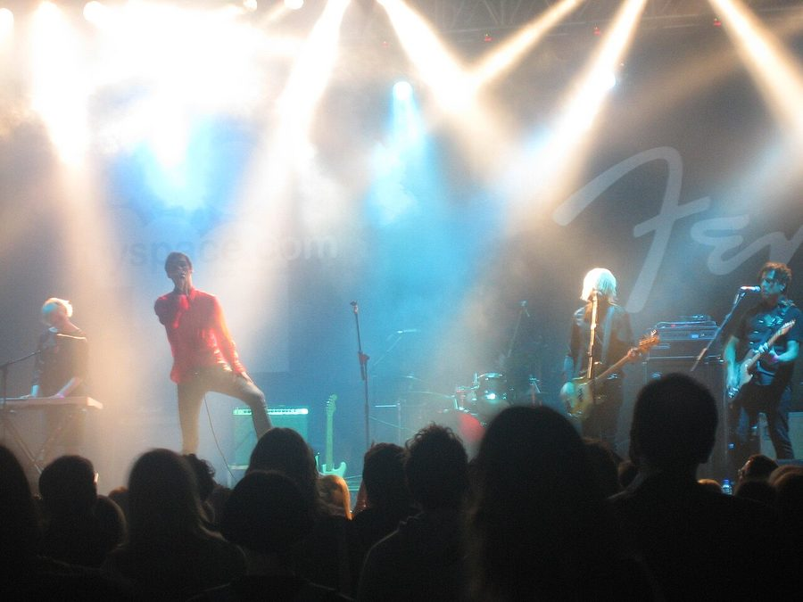

White Rose Movement to tour



British indie/electro act White Rose Movement will be traveling downunder for a series of shows in support of the mighty Nine Inch Nails, but you’ll also get the chance to catch them playing their own shows. The tour will be in support of their debut 2006 album Kick and its anthemic single Love Is A Number.
Check out the White Rose Movement at the following dates…
Saturday 15th September: Sydney, Big Top Luna Park (with NIN)
Sunday 16th September: Sydney, Hordern (with NIN)
Tuesday 18thSeptember: Sydney, Candys Apartment
Thursday 20th September: Melbourne, Next @ Colonial Hotel